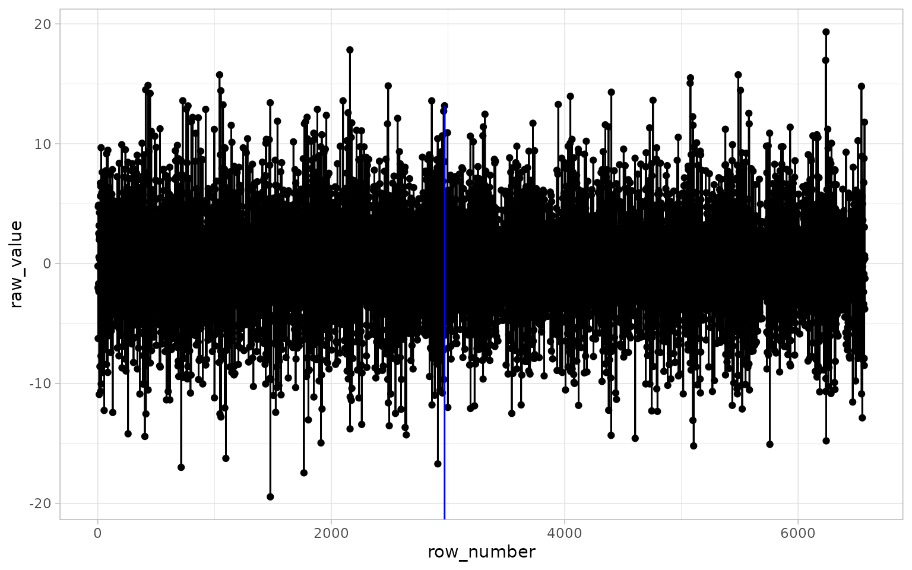

Introduction to ggchangepoint
Youzhi Yu
2022-02-24
Source:vignettes/introduction.Rmd
introduction.RmdThere are a number of changepoint detection packages in R. These packages have various APIs and sometimes it is difficult to compare the changepoints detected by various packages on the same data. Moreover, visualizing these changepoints along with the raw data is not connected to ggplot2. What the ggchangepoint package does is it combines a few functions from several changepoint packages together and offers the ggplot2 style changepoint plots.
In this introduction, all the data sets used are the same as Killick and Eckley (2014) starting from the Section 4.1, and all the variables are defined the same as the reference. Instead of following the authors’ code, we use ggchangepoint to carry out all the analysis, and users can make reasonable comparisons.
Changes in mean
Using PELT as the changepoint method:
m.pelt <- cpt_wrapper(m.data, change_in = "mean", cp_method = "PELT")
m.pelt
#> # A tibble: 2 × 2
#> cp cp_value
#> <int> <dbl>
#> 1 97 -1.61
#> 2 192 2.00Using BinSeg as the changepoint method:
m.binseg <- cpt_wrapper(m.data, change_in = "mean", cp_method = "BinSeg")
m.binseg
#> # A tibble: 2 × 2
#> cp cp_value
#> <dbl> <dbl>
#> 1 79 -1.05
#> 2 192 2.00
ggcptplot(m.data, change_in = "mean", cp_method = "BinSeg") +
labs(title = "Changes in mean (BinSeg)")PELT with penalty = "Manual":
m.pm <- cpt_wrapper(m.data,
change_in = "mean",
penalty = "Manual",
pen.value = "1.5 * log(n)")
m.pm
#> # A tibble: 3 × 2
#> cp cp_value
#> <int> <dbl>
#> 1 97 -1.61
#> 2 192 2.00
#> 3 273 -0.481
ggcptplot(m.data,
change_in = "mean",
penalty = "Manual",
pen.value = "1.5 * log(n)",
cptline_color = "red",
cptline_size = 2) +
labs(title = "Changes in mean (PELT with Manual penalty)")BinSeg with penalty = "Manual":
m.bsm <- cpt_wrapper(m.data,
change_in = "mean",
cp_method = "BinSeg",
penalty = "Manual",
pen.value = "1.5 * log(n)")
m.bsm
#> # A tibble: 4 × 2
#> cp cp_value
#> <dbl> <dbl>
#> 1 79 -1.05
#> 2 99 0.148
#> 3 192 2.00
#> 4 273 -0.481
ggcptplot(m.data,
change_in = "mean",
cp_method = "BinSeg",
penalty = "Manual",
pen.value = "1.5 * log(n)",
cptline_size = 2) +
labs(title = "Changes in mean (BinSeg with Manual penalty)")Since Killick and Eckley (2014) used a data set from Lai et al. (2005) about genomic hy- bridization (aCGH). Here we also use the data set:
data("Lai2005fig4", package = "changepoint")
cpt_wrapper(Lai2005fig4$GBM29, change_in = "mean")
#> # A tibble: 6 × 2
#> cp cp_value
#> <int> <dbl>
#> 1 81 0.0330
#> 2 85 4.72
#> 3 89 0.299
#> 4 96 3.99
#> 5 123 1.23
#> 6 133 4.47And we can quickly visualize it:
We can also use ecp_wrapper() to carry out the similar task on the data:
set.seed(2022)
ecp_wrapper(Lai2005fig4$GBM29)
#> # A tibble: 8 × 2
#> cp cp_value
#> <dbl> <dbl>
#> 1 29 1.31
#> 2 33 0.728
#> 3 82 4.51
#> 4 86 0.718
#> 5 90 5.62
#> 6 97 0.698
#> 7 124 4.59
#> 8 134 0.0302We can use ggcptplot() to detect and visualize changepoints detected by various functions. Otherwise, various packages need to be used.
Changes in variance
Killick and Eckley (2014) referenced the Irish wind speeds data set, which has previously been analyzed by Haslett and Raftery (1989) and Gneiting, Genton, and Guttorp (2006). It is a data set from the gstat package.
data("wind", package = "gstat")
wind.bs <- cpt_wrapper(diff(wind[, 11]), change_in = "var", cp_method = "BinSeg")
wind.bs
#> # A tibble: 1 × 2
#> cp cp_value
#> <dbl> <dbl>
#> 1 2971 13.2
There is only one changepoint detected in the data.
Changes in mean and variance
Since cpt.meanvar() is the default setting of cpt_wrapper(). There will be no extra specification in the change_in argument.
data("discoveries", package = "datasets")
dis.pelt <- cpt_wrapper(discoveries, test.stat = "Poisson")
dis.pelt
#> # A tibble: 3 × 2
#> cp cp_value
#> <int> <dbl>
#> 1 24 3
#> 2 29 9
#> 3 73 3References
Gneiting, Tilmann, Marc G Genton, and Peter Guttorp. 2006. “Geostatistical Space-Time Models, Stationarity, Separability, and Full Symmetry.” Monographs on Statistics and Applied Probability 107: 151.
Haslett, John, and Adrian E Raftery. 1989. “Space-Time Modelling with Long-Memory Dependence: Assessing Ireland’s Wind Power Resource.” Journal of the Royal Statistical Society: Series C (Applied Statistics) 38 (1): 1–21.
Killick, Rebecca, and Idris Eckley. 2014. “Changepoint: An R Package for Changepoint Analysis.” Journal of Statistical Software 58 (3): 1–19.
Lai, Weil R, Mark D Johnson, Raju Kucherlapati, and Peter J Park. 2005. “Comparative Analysis of Algorithms for Identifying Amplifications and Deletions in Array Cgh Data.” Bioinformatics 21 (19): 3763–70.